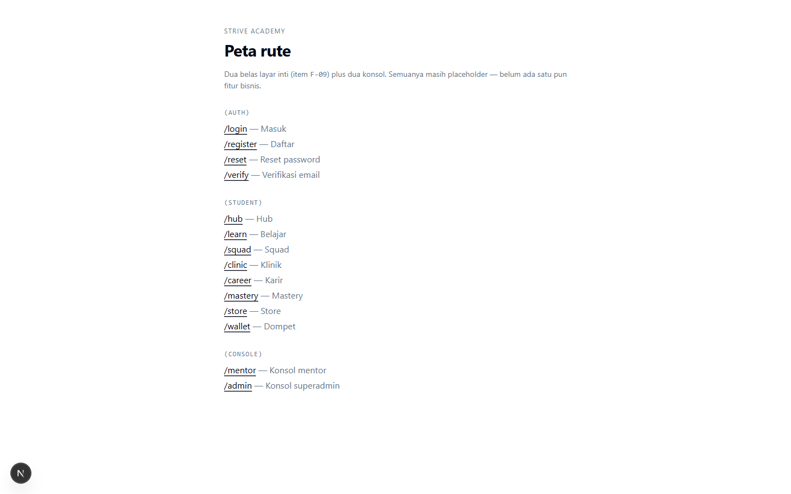
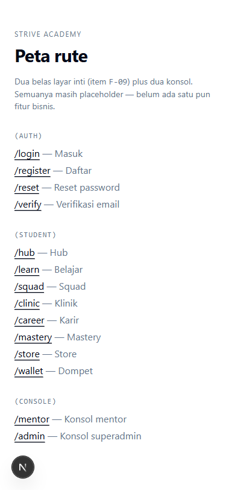

Item ini tidak menulis docker-compose.yml baru, filenya sudah ada di main.
Tugas sebenarnya adalah membuktikan bahwa developer baru benar benar bisa jalan dari nol, dan itu belum pernah diuji.
Hasilnya: enam masalah nyata ditemukan, empat sudah diperbaiki, dua butuh keputusan, dan satu bagian masih belum bisa dibuktikan.
Masalahnya apa. Acceptance criteria F-02 berbunyi: developer baru bisa jalan dari git clone
sampai aplikasi hidup dalam 10 menit, hanya dengan tiga perintah. Kalimat itu belum pernah diuji di mesin bersih.
Kalau tidak pernah diuji, setiap developer baru kehilangan waktu di lubang yang sama, dan tidak ada yang tahu lubang itu ada.
Apa yang ditemukan. Di Windows, pnpm dev gagal total. Bukan satu layanan, tapi ketiga tiganya.
Penyebabnya sama: script di package.json ditulis dengan sintaks shell ala macOS dan Linux, sedangkan pnpm di
Windows menjalankannya lewat cmd.exe yang tidak mengerti sintaks itu. Artinya repo ini sebelumnya hanya bisa dipakai
developer bersistem macOS atau Linux, dan tidak ada satu baris dokumen pun yang menyebutkan batasan itu.
Apa yang dikerjakan. Empat script pembungkus kecil berbasis Node menggantikan sintaks shell tadi. Tidak ada dependensi baru yang ditambahkan, itu disengaja. Perilakunya sekarang identik di macOS, Linux, dan Windows.
Dampaknya ke jadwal. F-02 memblokir F-04 milik Dev A, dan F-04 adalah awal jalur kritis empat minggu yang tidak punya kelonggaran sama sekali. Bagian aplikasi sudah terbukti jalan, jadi hambatan utamanya sudah hilang. Satu bagian (Docker) masih perlu dibuktikan, penjelasannya di bagian 6.
AC aslinya: dari git clone sampai app hidup dalam kurang dari 10 menit. Diukur dua kali dengan kondisi
cache berbeda, karena keduanya menggambarkan developer yang berbeda.
4 menit 10 detik
pnpm baru dipasang, store kosong, venv Python dibangun dari nol. Ini yang dialami developer yang baru pertama kali menyentuh project ini.
2 menit 9 detik
Clone kedua di mesin yang sama, store pnpm sudah terisi. Ini yang dialami developer yang mengulang setup atau menambah worktree.
Kesimpulan: AC terpenuhi dengan margin besar. Skenario terburuk pun selesai di bawah setengah anggaran waktu. Tidak ada alasan mengubah angka 10 menit di backlog.
| Langkah | Mesin baru | Store hangat | Catatan |
|---|---|---|---|
git clone | 2,6 dtk | 4 dtk | Repo masih kecil |
pnpm i | 155,3 dtk | 39 dtk | Bagian terbesar saat store kosong |
pnpm dev sampai tiga endpoint menjawab | 92,5 dtk | 85,8 dtk | Ditahan pembuatan venv Python |
| Total | 250,4 dtk | 128,8 dtk | Batas AC: 600 dtk |
Yang paling lama bukan yang diduga. Saat store kosong, pnpm i memakan 62 persen total waktu.
Saat store hangat, yang paling lama justru pembuatan virtualenv Python di layanan AI, dan itu hanya terjadi
sekali per clone.
Diambil dari proses pnpm dev yang benar benar berjalan, bukan dari membaca kode.
$ curl -s localhost:3001/health
{"status":"ok","service":"api","mode":"api","timestamp":"2026-09-14T14:42:34.003Z"}
$ curl -s localhost:8000/health
{"status":"ok","service":"ai","mode":"api","timestamp":"2026-09-14T14:43:06.453239Z"}
$ curl -s localhost:3000 | head -c 80
<!DOCTYPE html><html lang="id"><head><meta charSet="utf-8"/><meta name="viewport" ...Nilai "mode":"api" pada respons API bukan sekadar hiasan. Itu bukti bahwa variabel environment
MODE benar benar sampai ke proses anak lewat pembungkus yang baru. Sebelum diperbaiki, variabel itu
tidak pernah sampai dan prosesnya mati sebelum sempat menyala.
Lima belas rute diperiksa satu per satu, semuanya HTTP 200. Ini sekaligus memverifikasi klaim F-09 bahwa dua belas layar inti sudah bisa dinavigasi.
/ /login /register /reset /verify /hub /learn /squad
/clinic /career /mastery /store /wallet /mentor /admin
=> 15 dari 15 menjawab 200

scrollWidth 375 sama dengan
clientWidth 375, jadi tidak ada scroll horizontal dan tidak ada elemen terpotong.| # | Jenis | Skenario | Diharapkan | Hasil | Cara verifikasi |
|---|---|---|---|---|---|
| 1 | Happy path | Clone bersih, pnpm i, pnpm dev | Tiga endpoint menjawab di bawah 10 menit | LULUS, 2m09s | Stopwatch plus polling HTTP |
| 2 | Happy path | Web di localhost:3000 | HTTP 200, halaman ter render | LULUS | curl dan browser |
| 3 | Happy path | API di localhost:3001/health | JSON status ok | LULUS | curl |
| 4 | Happy path | AI di localhost:8000/health | JSON status ok | LULUS | curl |
| 5 | Happy path | Seluruh 15 rute web | Semua 200 | LULUS, 15/15 | Loop curl |
| 6 | Edge | Jalan tanpa file .env | Tetap hidup, memakai default aman | LULUS | Tidak ada .env dibuat selama pengujian |
| 7 | Edge | Tampilan di lebar 375px | Tanpa scroll horizontal | LULUS | Evaluasi scrollWidth di browser |
| 8 | Negatif | Konsol browser saat halaman dibuka | Tidak ada error aplikasi | LULUS | Hanya 404 favicon, lihat R5 |
| 9 | Negatif | Request gagal di tab network | Tidak ada 4xx atau 5xx | SEBAGIAN | 404 favicon.ico, kosmetik |
| 10 | Edge | venv Python setengah jadi lalu prosesnya dimatikan | Run berikutnya membangun ulang, bukan memakai yang rusak | LULUS | Terjadi sungguhan saat run pertama gagal, run kedua membangun ulang |
| 11 | Gate | pnpm lint | Hijau | LULUS, exit 0 | Output perintah |
| 12 | Gate | pnpm typecheck | Hijau | LULUS, exit 0 | 4 project, semua Done |
| 13 | Gate | pnpm test | Hijau | LULUS, 6 test | contracts 2, api 4 |
| 14 | Gate | pnpm build | Hijau | LULUS, 18 halaman | Output build Next.js |
| 15 | Gate | pytest layanan AI | Hijau | LULUS, 2 test | Dijalankan dari venv |
| 16 | Blocker | docker compose up -d | Tiga container healthy | BELUM DIUJI | Docker tidak terpasang, lihat bagian 6 |
Satu bagian acceptance criteria belum terbukti: docker compose up -d yang menghasilkan
PostgreSQL, Redis, dan MinIO berstatus (healthy).
Alasannya bukan kelalaian dan bukan kegagalan konfigurasi. Mesin ini memang tidak punya Docker sama sekali. Sudah diperiksa satu per satu: Docker Desktop tidak terpasang, WSL tidak punya distribusi terpasang, dan tidak ada runtime container alternatif (podman, nerdctl, minikube, colima).
Ini sengaja dilaporkan apa adanya, bukan ditutup dengan kesimpulan dari membaca file.
Isi infra/docker-compose.yml sudah dibaca dan terlihat benar: healthcheck ada di ketiga layanan,
volume persisten ada, tiga bucket MinIO dibuat privat, dan image MinIO diambil dari quay.io supaya tidak kena
penolakan pull dari Docker Hub. Tapi terlihat benar bukan berarti terbukti jalan. AGENTS.md langkah 7 melarang
menandai item selesai atas dasar pembacaan kode.
Yang dibutuhkan: pasang Docker Desktop, jalankan docker compose up -d diikuti
docker compose ps, lalu tempel hasilnya. Setelah itu F-02 baru boleh berstatus done.
CLAUDE.md menetapkan Python 3.12 untuk layanan AI. Mesin ini punya Python 3.13.1, dan venv terbentuk memakai versi itu. Seluruh test lulus, jadi tidak ada yang rusak hari ini. Tapi selisih versi antar developer adalah sumber bug yang baru muncul belakangan, jadi lebih baik disepakati sekarang: 3.13 diterima, atau 3.12 ditegakkan lewat pengecekan versi di script.
Enam masalah ditemukan selama verifikasi. Empat sudah diperbaiki, dua dicatat dan butuh keputusan. Tabel ini ada supaya masalah yang sama tidak muncul lagi tanpa ketahuan.
| # | Pemicu | Gejala | Akar masalah | Setelah perbaikan | Cara reproduksi |
|---|---|---|---|---|---|
| R1 | pnpm dev di Windows |
option '-p, --port' argument '${WEB_PORT:-3000}' is invalid |
cmd.exe tidak mengembangkan sintaks nilai default ala POSIX, teksnya diteruskan mentah ke Next.js | Port diselesaikan di Node lewat scripts/dev-web.mjs |
Jalankan pnpm dev:web di Windows sebelum commit 92f90c8 |
| R2 | pnpm dev di Windows |
Invalid parameter - =api |
Awalan variabel environment gaya POSIX tidak dikenal cmd.exe | MODE disetel lewat env proses anak di scripts/dev-api.mjs |
Jalankan pnpm dev:api di Windows sebelum commit 92f90c8 |
| R3 | pnpm dev:ai di Windows |
Gagal sebelum layanan sempat menyala | Tiga sebab sekaligus: bash di PATH menunjuk stub WSL, python3 menunjuk stub Microsoft
Store yang keluar dengan kode 9009, dan venv Windows menaruh interpreter di Scripts bukan bin |
scripts/dev-ai.mjs mencari interpreter yang benar benar menjawab --version,
dan tahu letak venv per sistem operasi |
Jalankan pnpm dev:ai di Windows tanpa distribusi WSL |
| R4 | Clone di Windows | Script shell ter checkout dengan akhir baris CRLF | Repo tidak punya .gitattributes, sedangkan Git di Windows default ke core.autocrlf=true |
.gitattributes mengunci seluruh file teks ke LF |
file scripts/dev-ai.sh di working tree Windows sebelum commit 09c5db5 |
| R5 | Buka halaman mana pun | 404 pada /favicon.ico di tab network dan konsol |
Belum ada favicon di apps/web |
Belum diperbaiki, sengaja | Buka localhost:3000 lalu lihat tab network |
| R6 | pnpm build di Windows |
Pohon standalone Next.js ditulis di luar repo, sekitar 1,8 MB menumpuk di folder induk tiap build | outputFileTracingRoot memakai new URL(...).pathname. Di Windows itu menghasilkan
/C:/Users/Nama%20Ada%20Spasi/..., ada slash di depan dan spasi ter-encode, jadi bukan path
filesystem yang sah. Di path yang mengandung spasi, ini juga rusak di macOS dan Linux |
Belum diperbaiki, butuh keputusan | Jalankan pnpm build di Windows, lalu lihat isi folder induk repo |
Perbaikan yang benar jelas: fileURLToPath(new URL('../../', import.meta.url)). Sudah kucoba, dan
hasilnya justru mengajarkan sesuatu.
Sebelum diperbaiki: build lulus (exit 0), tapi menulis ke tempat yang salah.
Sesudah diperbaiki: build menargetkan tempat yang benar, lalu gagal dengan
EPERM: operation not permitted, symlink. Sebabnya tata letak node_modules milik pnpm
butuh symlink, dan Windows hanya mengizinkan pembuatan symlink kalau Developer Mode menyala atau prosesnya admin.
Di mesin ini keduanya tidak terpenuhi.
Jadi perbaikan yang benar menukar bug yang diam dengan gate wajib yang merah. Gate merah
memblokir seluruh pekerjaan Dev B di Windows, karena pnpm build wajib hijau sebelum PR dibuka.
Folder nyasar cuma bikin berantakan. Yang pertama jauh lebih mahal, jadi perubahannya kukembalikan dan
temuannya kucatat di sini.
Butuh keputusan, ada dua jalan. Pertama, perbaiki outputFileTracingRoot lalu minta
developer Windows menyalakan Developer Mode. Kedua, jadikan output: 'standalone' aktif hanya saat build
Docker, karena satu-satunya yang memakainya memang infra/Dockerfile.web dan itu berjalan di Linux.
Jalan kedua menyentuh jalur deploy, yang bersinggungan dengan F-05, jadi bukan keputusan yang pantas
kuambil sendiri di dalam item ini.
Perlu dicatat: di macOS dan Linux dengan path tanpa spasi, kedua bentuk itu menghasilkan string yang sama persis, jadi tidak ada yang berubah untuk Dev A hari ini.
R5 tidak diperbaiki di sini karena itu urusan branding dan design token, yang jadi lingkup F-06. AGENTS.md aturan keras nomor 6 meminta bug milik item lain dicatat, bukan diperbaiki sambil lalu, supaya PR tetap bisa direview. Dampaknya kosmetik dan tidak mengganggu fungsi apa pun.
Satu item bisa lulus di satu sistem operasi dan gagal total di sistem lain. Tabel ini memisahkan apa yang benar benar diuji dari apa yang hanya diperkirakan.
| Yang diuji | Windows 11 | macOS dan Linux |
|---|---|---|
| Web (Next.js) | Diuji, lulus | Belum diuji di sesi ini |
| API (NestJS) | Diuji, lulus | Belum diuji di sesi ini |
| AI (FastAPI) | Diuji, lulus | Belum diuji di sesi ini |
| lint, typecheck, test, build | Diuji, hijau | Hijau di CI (ubuntu-latest) |
| docker compose | Tidak bisa diuji | Belum diuji di sesi ini |
Sebagian kolom kanan sudah terjawab CI. Ketiga job CI berjalan di ubuntu-latest
dan ketiganya lulus di PR ini: lint / typecheck / test / build, ai service / test, dan
migrasi kering. Jadi perubahan ini terbukti tidak merusak jalur build dan test di Linux, dan itu bukti
nyata bukan perkiraan.
Yang tetap belum terjawab: pnpm dev di macOS dan Linux. CI tidak pernah menjalankan
pnpm dev, jadi lulusnya CI tidak membuktikan ketiga server dev benar-benar menyala di sana.
Kenapa sisanya jujur ditulis belum diuji. Perubahan di item ini memakai Node murni tanpa sintaks khusus sistem operasi, jadi secara teknis seharusnya aman di macOS dan Linux. Tapi kata seharusnya bukan bukti, dan justru asumsi semacam itu yang membuat repo ini rusak di Windows sejak awal tanpa ada yang menyadarinya. Permintaan konkret ke reviewer ada di bagian berikutnya.
pnpm dev di macOS. Ini satu satunya hal yang tidak bisa dibuktikan dari
sisi saya, dan justru paling penting: perbaikan lintas sistem operasi tidak ada gunanya kalau merusak mesin yang
tadinya sudah jalan.docker compose up -d lalu docker compose ps. Tempel hasilnya
di PR. Setelah itu F-02 boleh ditandai done.apps/api/package.json,
yang berada di wilayah kerja Dev A. Tabel kepemilikan di CLAUDE.md hanya mengunci attempts.service.ts
dan db/migrations, jadi secara aturan tidak dilanggar, tapi lebih baik disebut terang terangan
daripada ketahuan belakangan.Dijalankan setelah kode selesai ditulis, sesuai kewajiban di aturan kerja. Cakupannya: keempat script baru,
infra/docker-compose.yml, .env.example, dan pemeriksaan rahasia di seluruh 22 commit.
WEB_PORT berisi 3000 & echo PWNED & rem sampai ke proses anak sebagai satu
elemen argv utuh, tidak dipecah dan tidak dieksekusi. Memakai spawn tanpa shell: true
memang cukup sebagai mitigasi.dependencies dan devDependencies di ketiga
package.json identik dengan main, dan pnpm-lock.yaml tidak berubah.dev-ai.sh. Job AI memanggil pytest langsung.| ID | Tingkat | Temuan | Perbaikan |
|---|---|---|---|
| S-1 | Sedang | Port Postgres, Redis, dan MinIO di-publish ke 0.0.0.0, bukan hanya localhost.
Sintaks pendek '55432:5432' tanpa IP host melewati aturan firewall host.
Karena repo ini publik, passwordnya bukan tebakan: siapa pun yang satu Wi-Fi bisa membacanya di GitHub
lalu menyambung ke database dev. |
Keempat port dibatasi ke 127.0.0.1 |
| S-2 | Sedang | AUTH_SECRET dan AI_SERVICE_TOKEN punya nilai default yang bisa dipakai.
Nilai AUTH_SECRET yang lama bahkan lolos ambang 32 byte, jadi pengecekan panjang yang naif
akan meloloskannya tanpa ada yang berteriak. Kalau sampai terbawa ke staging, itu bypass autentikasi penuh.
Semua kunci vendor lain di file itu sudah dikosongkan, jadi dua ini justru menyimpang dari pola filenya sendiri. |
Keduanya dikosongkan, komentarnya diperbarui. Jumlah variabel tetap 36, jadi pemetaan ke PRD 19.2 utuh |
| ID | Tingkat | Temuan | Kenapa ditunda |
|---|---|---|---|
| S-3 | Rendah | Image MinIO tertinggal 21 bulan, terdampak CVE-2025-62506 (CVSS 8.1) | Tidak bisa dieksploitasi pada konfigurasi sekarang: prasyaratnya butuh service account atau kredensial STS dengan policy terbatas, sedangkan compose ini hanya memakai akun root. Lebih penting lagi, menaikkan versi image berarti mengubah sesuatu yang tidak bisa saya uji tanpa Docker. Menaikkan pin tanpa bisa membuktikan imagenya bahkan bisa di-pull adalah persis jenis tebakan yang dilarang di sini. |
| S-4 | Rendah | Redis jalan tanpa requirepass |
Wajar untuk dev di balik loopback. Yang membuatnya berisiko adalah kombinasinya dengan S-1, dan S-1 sudah diperbaiki. Yang wajib dicatat: pola ini tidak boleh terbawa ke staging. |
| S-2b | Sedang | Belum ada penjagaan saat boot yang menolak start kalau AUTH_SECRET kosong atau sama dengan
nilai contoh di lingkungan non-dev |
Itu kode di Core API, lingkup A-01 (Better-Auth) milik Dev A. Komentar bukan mekanisme
penegakan, jadi ini layak dikerjakan, tapi bukan di item ini. |
Satu hal di luar cakupan yang tetap perlu diketahui: repo tidak punya .dockerignore.
Hari ini tidak ada rahasia yang tersalin karena infra/Dockerfile.api sudah selektif dan memakai user
non-root. Tapi COPY packages packages akan ikut menyapu file .env apa pun yang suatu saat
ditaruh di bawah packages/. Satu file .dockerignore menutup ini permanen.
Sudah terbukti: aplikasi hidup dari clone bersih dalam 2 sampai 4 menit, jauh di bawah batas 10 menit. Ketiga layanan menjawab. Lima belas rute menjawab 200. Empat gate mutu hijau. Tampilan aman di desktop dan 375px. Konsol bersih dari error aplikasi.
Belum terbukti: bagian Docker dari acceptance criteria. Karena itu F-02 belum ditandai
done di papan status, melainkan review. Menandainya done sekarang berarti papan status
berbohong, dan itu melanggar AGENTS.md aturan keras nomor 2.